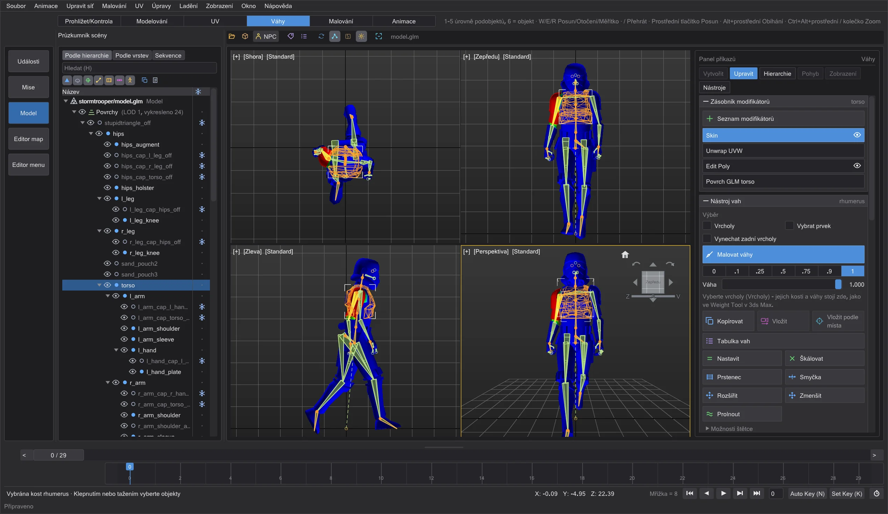
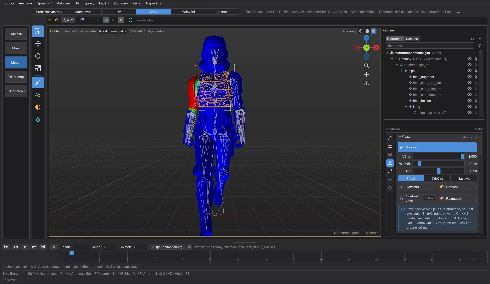
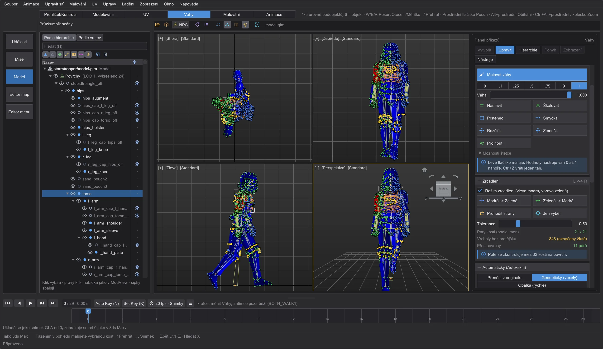

Karta Model: Weights
Malujte a upravujte váhy kostí modelu, zatímco animace běží dál - nástroji 3ds Max nebo Blenderu podle režimu ovládání. Zrcadlete jednu stranu na druhou i přes povrchy, zamykejte kosti a kdykoli uvidíte, zda se model vejde do mezí hry.
Panel vpravo#
Vyberte kost v průzkumníku scény nebo ve skupině Kost; model pak ukáže její váhy od modré (0) po červenou (1) a kosti jsou vidět. Jako 3ds Max ukazuje příkazový panel na kartě Změnit skupiny Zásobník modifikátorů, Nástroj vah, Zrcadlení, Automaticky (Auto-skin), Kost, Meze JKA a zavřenou Rozšířené parametry. Jako Blender ukazuje editor vlastností na kartě Data Štětec, Možnosti, Vyčištění, Zrcadlení, Automaticky (Auto-skin), Kost a Meze JKA. Každá funkce je také ve vyhledávání všech akcí (X, jako Blender F3) a v pravém kliknutí pohledu pod Nástroje vah.


Malování#
Hlavní tlačítko Malovat váhy (jako Blender: Malovat) zapíná a vypíná malování. Zapnuté: levé tlačítko maluje váhu vybrané kosti; vypnuté: vybírá - vrcholy na úrovni vrcholů (1) - pro nástroje, které pracují s výběrem. Štětec přidává, odečítá, vyhlazuje nebo nastavuje váhu; jako v Blenderu je tu i Přechod (táhněte čáru: na začátku plná váha, na konci nic, lineárně nebo radiálně) a Rozmazat (táhne váhy se štětcem). Jako ve 3ds Max jsou tyto a poloměr, síla a zrcadlení při malování pod Možnosti štětce. S Automaticky normalizovat (jako 3ds Max: Normalizovat, od začátku zapnuto) dávají váhy vrcholu vždy 1: malovaná kost si hodnotu ponechá a ostatní si rozdělí zbytek. Jeden tah je jeden krok zpět.
V režimu Blender platí klávesy weight paint z Blenderu: tah s Ctrl odečítá, se Shift vyhlazuje; Shift+X odebere váhu pod myší (Odebrat váhu), Ctrl+X ji nastaví na výběr; F, Shift+F a Ctrl+F táhnou poloměr, sílu a váhu - klepnutí potvrdí, Esc nebo pravé tlačítko zruší.
Nástroj vah a vyčištění#
Jako Weight Tool ve 3ds Max: při vypnutém malování nastaví pevné hodnoty 0 až 1 váhu vybrané kosti hned na vybrané vrcholy; Škálovat ji vynásobí měřítkem (výchozí 0,95), Prolnout srovná vybrané vrcholy se sousedy a Prstenec, Smyčka, Rozšířit a Zmenšit výběr rozšíří nebo zmenší (prstenec a smyčka běží přes čtyřúhelníky; síť z trojúhelníků se pro to spáruje do čtyřúhelníků, aniž by se model změnil). Čisticí příkazy Blenderu - Normalizovat vše, Vyčistit, vyhlazení všech kostí a Omezit: 4 - platí pro každý vrchol, nebo pro vybrané, jsou-li vrcholy vybrané; jako ve 3ds Max jsou v Rozšířené parametry jako Normalizovat vše, Odstranit nulové váhy a Limit kostí: 4. Vrcholy na stejném místě - na UV švu nebo kde se stýkají dva povrchy - dostanou vždy stejné váhy, aby se síť při pohybu netrhala.
Vrcholy jako modifikátor Skin v 3ds Max: skupina Nástroj vah má *Výběr: vrcholy, vybrat prvek, vynechat zadní vrcholy*; vrcholy se vybírají klikem nebo tažením, Ctrl přidá, Alt odebere. Její seznam ukazuje každou kost s váhou vybraných vrcholů (u více vrcholů průměr); klikněte na kost a napište hodnotu nebo použijte .1/.25/.5/.75/.9/1 - součet zůstane 1. Kopírovat, Vložit a Vložit podle místa přenášejí váhy mezi vrcholy, tabulka vah (ukotvitelná) uvádí vrcholy × kosti a Zrcadlově vložit přenese vybrané vrcholy na druhou stranu s prohozenými kostmi vlevo/vpravo; páry stojí pod Páry kostí - v seznamu řádku vyberte jiného partnera nebo v posledním řádku spárujte libovolné dvě kosti (např. Bip01 L Hand), Páry podle názvů se vrátí k názvům. Jako v Blenderu ukazuje panel Váhy vrcholů stejný seznam. Malování vah zůstává jedním z nástrojů; ukládá se ve formátu hry (4 váhy, 10 bitů).
Zrcadlení#
Kosti se párují podle jmen (lhumerus a rhumerus), vrcholy podle polohy, i přes povrchy - v JKA jsou levá a pravá paže samostatné povrchy. Tabulka skupiny ukazuje páry kostí, vrcholy bez protějšku a povrchy, které se navzájem zrcadlí; Tolerance říká, jak daleko od zrcadleného místa smí protějšek ležet. Jako 3ds Max označí Režim zrcadlení (vlevo modrá, vpravo zelená) vrcholy v pohledu (žlutě: bez protějšku), Modrá -> Zelená a Zelená -> Modrá kopírují jednu stranu na druhou, Prohodit strany je prohodí a Jen výběr omezí všechny tři na vybrané vrcholy. Jako Blender zrcadlí Zrcadlit skupinu vybranou kost a Všechny skupiny všechny kosti, s Zrcadlit váhy a Prohodit jména (L<->R): bez výběru vrcholů se obě strany prohodí, s výběrem dostane vybraná strana tu druhou. Zrcadlení podle topologie hledá protějšky podle stavby sítě, když jsou její poloviny stejně stavěné, ale neleží přesně stejně. Po zrcadlení zpráva jmenuje povrch, který teď používá víc kostí, než hra čte (32).

Kost, zámky a meze hry#
Skupina Kost ukazuje vybranou kost a pózu (sekvenci a snímek); animace při práci běží dál. Zamknout zamkne vybranou kost: žádný štětec ani příkaz její váhy nezmění a normalizace ji obchází. Zamčené kosti jsou v seznamu s x pro odemknutí; Zámky (jako Blender: K) otevře nabídku, která zamkne nebo odemkne všechny kosti, vybranou nebo všechny ostatní. Zobrazit kosti přepíná kosti v pohledu; v této oblasti jsou od začátku zapnuté. Skupina Meze JKA ukazuje pruhy, co hra čte: vrcholy a kosti na povrch (vybraného povrchu, jinak toho, který je mezi nejblíž) a nejvíce vah na jednom vrcholu. Použít (4 váhy, normalizované) zapíše namalované váhy do modelu tak, jak je hra čte: čtyři největší, normalizované, v 10 bitech.
Uložení, úroveň detailu a Ctrl+Z při malování#
Uložení zapíše váhy, které ukazuje pohled, i když jsou seznamy malování otevřené (po malování nebo příkazu této oblasti, před Použít (4 váhy, normalizované)): soubor dostane čtyři váhy na vrchol, které ukazuje póza, normalizované tak, jak je čte hra, a seznamy malování zůstanou otevřené pro další malování. Kontrola před uložením a limity JKA v modelování měří totéž. S volbami Jen vybrané povrchy a Potom zrcadlit zrcadlí Auto-Skin jen do vybraných ploch: chcete-li zrcadlit jednu paži na druhou, vyberte obě.
Malování a příkazy této oblasti platí pro zobrazenou úroveň detailu (s volbou Auto sleduje přiblížení); ostatní úrovně si ponechají své váhy - jen Auto-Skin váží všechny úrovně. Dokud je otevřený tah, přechod, tažení nebo okénko nástroje, ponechá pohled úroveň, ve které začal, i když kolečko přibližuje; nová úroveň přijde po puštění. Výběr vrcholů, hran nebo mnohoúhelníků patří ke své úrovni: po změně úrovně je prázdný a vrátí se, když se pohled vrátí na tuto úroveň a její síť se mezitím nezměnila (malování vah se nepočítá). Ctrl+Z při držení tlačítka myši ukončí otevřený tah, přechod nebo tažení a vrátí ho; Ctrl+Y ho obnoví.